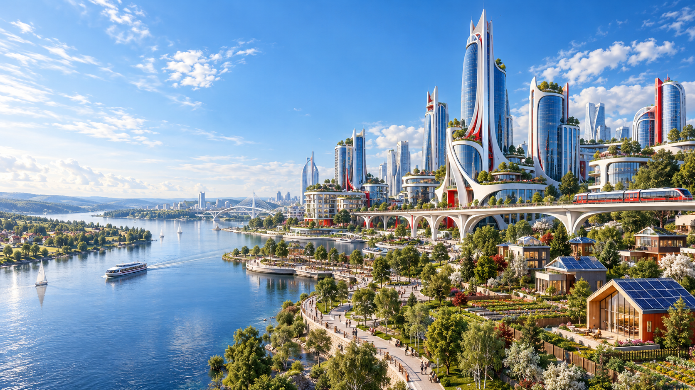

Перейти к содержанию
Развитие России на 100 лет
Долгосрочное развитие страны: технологии, образование, инфраструктура и качество жизни.
Конкурсы Город, поселок, деревня через 100 лет: рисунок и описание вашего будущего.
Перейти к конкурсам

Творческий конкурс
Город, поселок,через 100 лет
Представьте будущее родного места.
О конкурсе
+
Конкурс
Будущее начинается
Как изменится место, где вы живете, через сто лет? Какими станут дома, улицы, транспорт и природа рядом с нами?
Создайте рисунок города, поселка или деревни будущего и дополните его описанием. Покажите не только новые здания, но и жизнь людей: что они ценят, как общаются и заботятся о своем доме.
Одна идея Рисунок Описание к рисунку
Посмотреть направления
Ваша тема
Направления конкурсов Три масштаба.
01 Город Новый ритм большой жизни Подробнее
02 Поселок Технологии ближе к человеку Подробнее
03 Деревня Природа, традиции, новые идеи Подробнее
Подготовка работы
Вопросы о конкурсе
01 Что должно быть Подробнее 02 О чем написать Подробнее 03 Как отправить Подробнее
Сроки, порядок отправки и подробные условия участия будут опубликованы здесь.
Экспертный взгляд
Члены жюри
Направление / Город
Город через 100 лет
Представьте город, в котором технологии помогают людям, а общественные пространства объединяют их.
Какими станут дома, улицы и районы? Как будут передвигаться жители? Где люди будут учиться, работать и отдыхать? Как город сохранит чистый воздух, воду и зеленые зоны? Покажите вашу идею на рисунке и объясните, что делает этот город особенным.
Направление / Поселок
Поселок через 100 лет
Представьте уютное место, где современные возможности доступны рядом с домом.
Как будут выглядеть дома и общие пространства? Что свяжет поселок с другими населенными пунктами? Где будут расположены школы, места работы и отдыха? Как новые технологии улучшат повседневную жизнь? Нарисуйте поселок и расскажите о жизни его жителей.
Направление / Деревня
Деревня через 100 лет
Представьте деревню, в которой природа и традиции встречаются с новыми возможностями.
Какими станут дома, дворы и хозяйства? Как жители будут выращивать продукты и получать энергию? Что сохранится из местных традиций? Как деревня будет заботиться о природе вокруг? Создайте рисунок и опишите, как будет устроена жизнь в вашей деревне будущего.
Вопрос / Рисунок
Что должно быть на рисунке?
Ваше видение города, поселка или деревни через 100 лет. Можно показать панораму, улицу, площадь, двор или другое место, через которое раскрывается ваша идея.
Продумайте, как место изменится за сто лет. Добавьте детали: транспорт, природу, дома и пространства для людей. Покажите связь между архитектурой и повседневной жизнью. Требования к технике, размеру и формату работы будут опубликованы в условиях конкурса.
Вопрос / Описание
О чем написать в описании?
Помогите зрителю понять ваш рисунок. Расскажите о месте, его жителях и изменениях, которые вы представили.
Как называется ваша работа и какое место изображено? Что изменилось через 100 лет, а что сохранилось? Как работают новые технологии и как они помогают людям? Почему вы хотели бы жить в таком месте? Требования к объему описания будут опубликованы вместе с условиями участия.
Вопрос / Участие
Как отправить работу?
Способ отправки работ и даты приема пока не опубликованы.
Подготовьте рисунок и описание к нему. Порядок подачи, требования к файлам и сведениям об авторе появятся на этой странице вместе с подробными условиями конкурса.
Рисунок и описание города, поселка или деревни через 100 лет. Сроки и способ отправки работ будут опубликованы здесь. Для просмотра подробностей в карточках включите JavaScript.